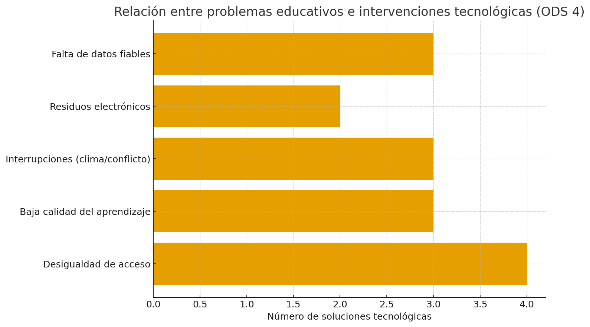

ODS 4 — Educación de calidad
¿Cuál es el objetivo principal de este ODS según la ONU?
El objetivo principal del ODS 4 es "asegurar una educación inclusiva y equitativa de calidad y promover oportunidades de aprendizaje permanente para todos".
¿Qué relación tiene con la tecnología o la informática?
La tecnología (EdTech, conectividad, plataformas digitales, gestión de datos) puede:
- Ampliar el acceso a recursos educativos en zonas remotas o en situaciones de emergencia.
- Personalizar el aprendizaje mediante plataformas adaptativas.
- Mejorar la formación y apoyo docente mediante cursos online y sistemas de gestión.
- Facilitar la medición y seguimiento del progreso educativo con sistemas de información.
La comunidad internacional (World Bank, UNESCO) considera la tecnología como herramienta para cerrar brechas y mejorar resultados, siempre que se combata la brecha digital.
¿Qué problemas o retos ambientales/sociales afectan al logro de este objetivo?
- Desigualdad de acceso — brechas por ruralidad, género, pobreza o zonas en conflicto; muchos niños siguen fuera de la escuela.
- Baja calidad del aprendizaje — resultados educativos insuficientes, falta de docentes capacitados y de materiales pertinentes.
- Interrupciones por clima y conflicto — desastastres naturales y conflictos desplazan alumnos y dañan infraestructura escolar, provocando cierres prolongados.
¿Cómo influye la actividad tecnológica en esos problemas?
- Positivo
- Permite educación a distancia y continuidad educativa en emergencias.
- Plataformas adaptativas pueden mejorar el aprendizaje individualizado.
- Sistemas de información mejoran la planificación y la detección temprana de abandono escolar.
- Negativo
- Si no se gestiona, la tecnología puede amplificar desigualdades (quienes no tienen internet o dispositivos quedan atrás).
- Consumo energético y residuos electrónicos asociados a dispositivos pueden generar impactos ambientales locales si no se reciclan adecuadamente.
- Implementaciones mal diseñadas pueden distraer o sustituir apoyo docente efectivo sin mejorar resultados.
¿Qué soluciones tecnológicas podrían aplicarse para mitigarlos o resolverlos?
- Conectividad y dispositivos subvencionados: redes comunitarias, programas de préstamo de dispositivos.
- Plataformas de aprendizaje adaptativo que se ajusten al nivel del alumno y funcionen offline (sin conexión permanente).
- Formación docente digital (programas blended, micro-credentialing) para mejorar la enseñanza.
- Sistemas de gestión de información educativa (EMIS) para monitorizar matrículas, asistencia y aprendizaje en tiempo real.
- Soluciones de resiliencia escolar: contenido educativo por radio/TV en emergencias, plataformas con modo offline, y back-ups en la nube.
- Economía circular para dispositivos: programas de reparación y reciclaje para reducir residuos electrónicos.
¿Qué ejemplos o casos reales conoces?
- Plataformas globales y proyectos: iniciativas EdTech impulsadas o estudiadas por el World Bank (informes y proyectos de digital pathways).
- UNICEF — programas para recuperar acceso a la educación tras emergencias y apoyos a la primera infancia.
- Proyectos nacionales y ONGs — numerosas iniciativas locales que combinan radio educativa, paquetes offline y distribución de dispositivos (ver informes GEM y World Bank para casos detallados).
¿Qué indicadores o métricas podrían usarse para medir el progreso hacia este ODS?
- Tasa de matriculación en educación primaria y secundaria (por sexo y zona).
- Tasa de finalización de educación primaria/secundaria.
- Porcentaje de niños alcanzando niveles mínimos de lectura y matemáticas.
- Número/porcentaje de escuelas con acceso a internet y dispositivos.
- Asistencia promedio diaria y tasas de abandono escolar.
- Resiliencia frente a interrupciones: número de niños que continúan accediendo a educación tras desastres/conflictos.
Problemas, impactos y soluciones tecnológicas
| Problema / reto | Impacto (social/ambiental) | Soluciones tecnológicas |
|---|---|---|
| Desigualdad de acceso (brechas rural/urbana, género, pobreza) | Exclusión educativa, perpetúa pobreza y desigualdad | Conectividad comunitaria, dispositivos subvencionados, contenido offline, plataformas multilenguaje. |
| Baja calidad del aprendizaje y falta de docentes capacitados | Bajo rendimiento, menor empleabilidad | Plataformas adaptativas, formación docente online (blended), recursos interactivos y evaluación digital. |
| Interrupciones por clima y conflicto | Cierres escolares, pérdida de años de aprendizaje | Contenido por radio/TV, plataformas con modo offline, backups en la nube, sistemas de alerta y continuidad educativa. |
| Residuos electrónicos y consumo energético | Problemas ambientales locales (residuos tóxicos) | Programas de reparación/reciclaje, dispositivos de bajo consumo, políticas de economía circular. |
| Falta de datos fiables sobre matrícula/asistencia | Políticas mal dirigidas, recursos mal asignados | EMIS y dashboards en tiempo real, interoperabilidad de datos, anonimización para privacidad. |
Imágen Gráfica

Enlaces a fuentes fiables
- ONU — SDG 4: Goal overview.
- UN Sustainable Development / Education (explicación objetivo).
- UNESCO — Global Education Monitoring (GEM) Report / Monitoring SDG4.
- World Bank — Educación y tecnología (EdTech) y Digital Pathways for Education.
- UNICEF — estadísticas y reportes sobre educación y niños fuera de la escuela.
- AP / reportes sobre impactos del clima en la educación (ej.: cierres por eventos extremos).
Otros ODS relacionados
-
ODS 9: Industria, innovación e infraestructura
Este ODS se conecta con el ODS 4 debido a la necesidad de infraestructuras digitales y tecnológicas que permitan una educación inclusiva y de calidad. La innovación en tecnologías educativas y la conectividad son esenciales para reducir brechas educativas. -
ODS 10: Reducción de las desigualdades
La educación es uno de los medios más efectivos para disminuir desigualdades socioeconómicas. El ODS 4 contribuye directamente al ODS 10 al ofrecer oportunidades equitativas de aprendizaje para todos, independientemente del origen o situación económica. -
ODS 11: Ciudades y Comunidades Sostenibles
Las ciudades sostenibles necesitan entornos educativos accesibles, resilientes y seguros. El ODS 4 se conecta con el ODS 11 al promover infraestructuras educativas adaptadas, espacios seguros para el aprendizaje y sistemas de educación preparados para crisis urbanas como desastres naturales o desplazamientos.